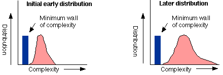
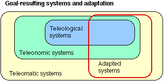

Summary: Evolution has no goal, but there are directional trends of a lesser kind. Teleological explanations are more complex than one might think.
One of the more common misconceptions, with a history long before Darwin, is that evolution is progressive; that things get more complex and perfect in some way. In fact, this view is attributed more to social and religious attitudes of 18th and 19th century European culture than to any evidence. It was a given that things are getting better and better, every way, every day. This persisted until long after Darwinism, until the middle of this century (e.g., Teilhard de Chardin). Even Darwin was ambiguous about it, talking on occasion about 'perfection' as a result of selection.
At the time of the 'modern synthesis' [note 9] in the 1940s, the notion of progress was quietly dropped, with a few exceptions like Dobzhansky and Huxley within the synthesis, and Schindewolf and Goldschmidt outside it. Of course, heterodox writers (usually not biologists) like Teilhard and Koestler remained progressionists long after this. But by the 1970s, progress had been abandoned by working biologists.
Recently, the issue has resurfaced, shorn of the mysticism of earlier debates. Biologist J.T. Bonner argued that there was a rise in complexity of organisms over the long term [1988], and others were arguing for a form of local progress under the terms 'arms race' [Dawkins and Krebs 1979] and 'escalation' [Vermeij 1987]. Gould [1989] felt so strongly about it he was moved to deny that, at least since the Cambrian explosion, there has been any progress at all.
Much of the modern debate centres on what counts as 'progress'. Gould [1996] thinks that the apparent trend to complexity is just a matter of random evolution that started at a minimal 'wall' of complexity:
|
 |
Others [cf Nitecki 1988] claim that there is only progress because any increase over zero is a net increase, and that different measures will give different results. The traditional notion of progress as an increase in perfection or optimality has been abandoned, for it rested on a view that goes back to the late neo-Platonists - the idea that all of reality is arranged in a heirarchy of increasing perfection. This is called the scala naturae, and is often referred to the Ladder of Perfection. Modern evolutionary science does not think that the path of evolution is a ladder, although Lamarck did. The current view is best summed up by a phrase of Gould's - evolution is a bush, not a tree.
The idea of progress itself was a late medieval notion, taken from the secularisation of theology, especially from the doctrines called 'eschatology' (literally, the 'study of the Last Things') [Ruse 1997]. The 'discovery' of history led to the realisation that biological organisms are historical entities. The view that history was progressive led to the notion that so was the history of life, especially since it led to Man.[note 10] In the nineteenth century, progressivism was rampant, and curiously it always seemed that the ultimate stage was that of the writer, whether it was Marx for the (European) working class, Spencer for the (mostly English) British, or Wagner for the (mostly Prussian) Germans. The first world war came as quite a shock to many, and progress gradually lost its appeal.
Biological systems are historical in two ways: they are the result of irreversible processes (i.e., they grow and die), and they are contingent. the second point is important if you are thinking about what is science in biology. You can't often repeat an event in biology like speciation (some hybrids can be reformed repeatedly in the lab) and get the same results. What's more, the view called teleology has been dropped by biologists: explanations of what something is for don't say that they are there in order to achieve an end result. It is enough that they are the result of selection.
Or is it? Teleology, too, is making a minor comeback. In science, teleology is a way of modelling a system's behaviour by referring to its end-state, or goal. It is an answer to a question about function and purpose. Why do vertebrates have hearts? In order to pump blood around the body to distribute oxygen and nutrients, etc. This is a functional explanation. The function of hearts is to pump blood. In evolution, the question 'why do organisms exhibit adaptation?' is not answered teleologically with 'in order to survive', but historically - 'because those that were less adaptive didn't survive'. However, some forms of teleology are still used, on the understanding that they reduce to historical explanations.
It may help to think of a social analogy. We can explain the behaviour of a stock broker teleologically, for a stock broker seeks a goal (the best profit). We cannot explain the behaviour of a stock market, for stock markets have no goals, just outcomes. When Dawkins talks about genes maximising their representation in the gene pool, this is a metaphor not an explanation. Genes just replicate. It happens that those that out-replicate others end up out-surviving them. There is no 'goal' to genetic behaviour.
There are two forms of teleological explanation (Lennox 1992). External teleological explanation derives from Plato - a goal is imposed by an agent, a mind, which has intentions and purpose. Internal teleological explanation derives from Aristotle, and is a functional notion. Aristotle divided causes up into four kinds - material (the stuff of which a thing is made), formal (its form or structure), efficient (the powers of the causes to achieve the things they achieve) and final (the purpose or end for which a thing exists). Internal teleology is really a kind of causal explanation in terms of the value of the thing being explained. This sort of teleology doesn't impact on explanations in terms of efficient causes. You can, according to Aristotle, use both.
Evolutionary explanations are most nearly like Aristotle's formal and efficient causes. Any functional explanation begs the further question - what is the reason why that function is important to that organism? - and that begs the even further question - why should that organism exist at all? The answers to these questions depend on the history of the lineage leading to the organism.
External teleology is dead in biology, but there is a further important distinction to be made. Mayr [1982: 47-51] distinguished four kinds of explanations that are sometimes called teleology: telenomic (goal-seeking, Aristotle's final causes, 'for-the-sake-of-which' explanations); teleomatic (lawlike behaviour that is not goal-seeking); adapted systems (which are not goal seeking at all, but exist just because they survived); and cosmic teleology (end-directed systems) [cf O'Grady and Brooks 1988]. Only systems that are actively directed by a goal are truly teleological. Most are just teleomatic, and some (e.g., genetic programs) are teleonomic (internal teleology), because they seek an end.
 |
Many criticisms of Darwinism rest on a misunderstanding of the nature of teleology. Systems of biology that are end-seeking are thought to be end-directed, something that Darwinism makes no use of in its models. Outside biology - indeed, outside science - you can use external teleology all you like, but it does not work as an explanation of any phenomena other than those that are in fact the outcomes of agents like stock brokers. And even there, teleology is not always useful, for which stock brokers (or cabal of stockbrokers) desired the goal of the 1987 crash, or the 1930 depression? External teleology is useless in science, and any science that attempts to be teleological will shortly become mysticism.